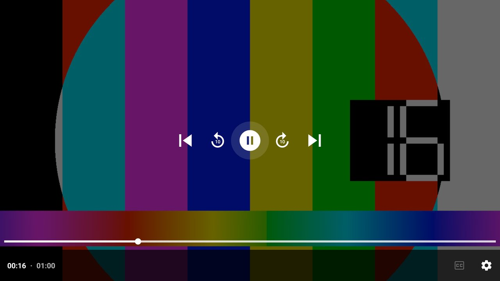

← Retour à l'accueil de Kairo

Kairo Player
L'appli compagnon pour lire vos vidéos, photos et musiques de la box et des clés ou disques USB. Installation séparée : le launcher reste léger.
L'appli compagnon pour lire vos vidéos, photos et musiques de la box et des clés ou disques USB. Installation séparée : le launcher reste léger.
Reprendre, Dossiers (avec le nom de la clé USB), vidéos et photos récentes, musique.
Lecteur Media3 (ExoPlayer) : MKV, MP4, sous-titres et pistes audio intégrés.
← → pour reculer / avancer de 10 s, OK pour pause, épisode suivant du dossier à la fin.
Reprise là où vous vous êtes arrêté, et la vidéo apparaît dans « À suivre » de Kairo (et de Google TV) avec sa vignette.
PDF page par page (← → pages, ↑ ↓ défiler, OK zoom) et textes (.txt, sous-titres, accents Windows ou UTF-8), ouverts depuis Kairo Files ou toute appli.
Photos plein écran, diaporama d'un appui sur OK. Mise à jour automatique quand une clé est branchée.
Ouvre aussi les vidéos envoyées depuis le téléphone avec Kairo Remote (Téléchargements › Kairo).
« Chercher dans Kairo Player » en tête des suggestions de la recherche de Kairo.
Sur l'accueil : « À suivre » et rangées publiées par Kairo Player (vidéos récentes, reprise de lecture).


Android TV, avec ou sans Kairo.
Rangée « Nos applications » de l'accueil, ou Réglages › Mise à jour : installation et mises à jour en un clic.
Téléchargez kairo-player.apk, puis installez-le par clé USB ou adb install.
Chaque appli se propose et s'installe en un clic depuis Kairo.
Le launcher Android TV, fluide sur les petites box.
Le gestionnaire de fichiers à la télécommande.
Fichiers, textes et liens entre le téléphone et la TV.
L'écran du Mac ou du PC Windows sur la TV.
Le téléphone devient la télécommande.
Le lecteur IPTV, intégré à Kairo.